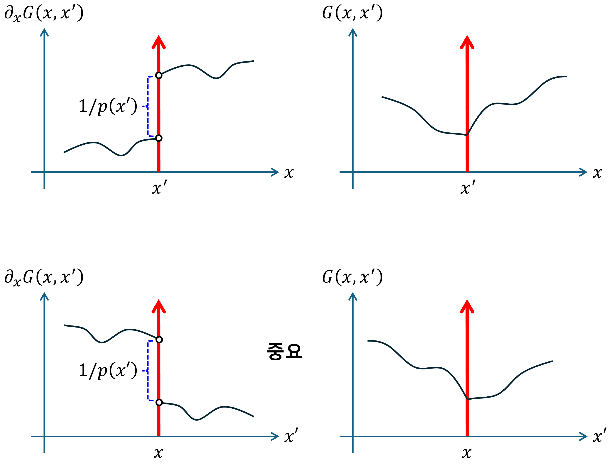

(i) Second-order PDE
1. Jump condition & Continuous
$$ \left\lbrack\frac{\partial}{\partial x}\left(p\left(x\right)\frac{\partial}{\partial x}\right)+q\left(x\right)\right\rbrack G\left(x,x'\right)=\delta\left(x-x'\right) $$$$ p\left(x\right),q\left(x\right):\text{ continous} $$위의 연산에 대해, ë””ë ‰ 델타가 결과로 나오기 위해서는, $\partial_{x}\left(p\left(x\right)\partial_{x}\right)G\left(x,x’\right)$ 또는 $G\left(x,x’\right)$가 ë””ë ‰ 델타가 되어야 한다. $G\left(x,x’\right)$이 ë””ë ‰ 델타 라면, $x$에 대한 미분이 불가능 하기에, $G\left(x,x’\right)$이 ë””ë ‰ 델타가 될 수 없다. 따라서, $\partial_{x}\left(p\left(x\right)\partial_{x}\right)G\left(x,x’\right)$ 이 ë””ë ‰ 델타가 되어야 한다.
$$ \frac{\partial}{\partial x}\left(p\left(x\right)\frac{\partial}{\partial x}\right)G\left(x,x'\right)=\delta\left(x-x'\right) $$위로부터, $x’$과 ì¸ì ‘í•œ 부분ì—ì„œ, $\partial_{x}{\displaystyle G\left(x,x’\right)}$는 불연속 함수인 â€œë‹¨ìœ„ 계단 함수†ì„ì„ 알 수 있다. *Characteristics of Dirac delta
$$ p\left(x\right)\frac{\partial}{\partialx}G\left(x,x'\right)=u\left(x-x'\right)\implies\frac{\partial}{\partialx}G\left(x,x'\right)=\frac{1}{p\left(x\right)}u\left(x-x'\right) $$$x’$과 ì¸ì ‘í•œ 부분ì—ì„œ 위 식을 ì 분하면, G(x,x’)은 연속 í•¨ìˆ˜ê°€ 나옴을 알 수 있다. 위 그린함수의 형태를 ê·¸ë ¤ë³´ë©´ 다음과 같다.
ℹ️ 을 í˜•ì—°ì‚°ì L이 2차 미분일 경우,
-
Jump condition, $DG\left(x,x’\right)$는 $x=x’$에서 불연속이다.
-
Continuous, $G\left(x,x’\right)$는 $x=x’$에서 연속이나, 좌우 미분값이 다르다.
2. General solution
$$ \left\lbrack\frac{\partial}{\partial x}\left(p\left(x\right)\frac{\partial}{\partial x}\right)+q\left(x\right)\right\rbrack G\left(x,x'\right)=\delta\left(x-x'\right) $$(1) $x\ne x'$
$$ LG\left(x,x')\right.=0 $$$$ G\left(x,x'\right) =\begin{cases} c_1\left(x'\right)u_1\left(x\right) & x < x' \\ c_2\left(x'\right)u_2\left(x\right) & x > x' \end{cases} $$    Boundary condition 사용하여, 계수들 중 일부를 구한다.
(2) $x=x'$
$$ LG\left(x,x')=\delta(x-x'\right) $$$$ \int_{x_{>}'}^{x_{<}'}LG\left(x,x'\right)dx=\int_{x_{>}'}^{x_{<}'}\delta\left(x-x'\right)dx=1 $$$$ \int_{x_{>}'}^{x_{<}'}dx\left\lbrack\frac{\partial}{\partial x}\left(p\left(x\right)\frac{\partial}{\partial x}\right)G\left(x,x'\right)+q\left(x\right)G\left(x,x'\right)\right\rbrack=1 $$$$ p\left(x\right)\frac{\partial}{\partial x}\left.G\left(x,x'\right)\right|_{x_{<}'}-p\left(x\right)\frac{\partial}{\partial x}\left.G\left(x,x'\right)\right|_{x_{>}'}+\int_{x_{>}'}^{x_{<}'}dx\left\lbrack q\left(x\right)G\left(x,x'\right)\right\rbrack=1 $$여기에서,
$$ \int_{x_{>}'}^{x_{<}'}dx\left\lbrack q\left(x\right)G\left(x,x'\right)\right\rbrack=0 $$따라서,
$$ p\left(x\right)\frac{\partial}{\partial x}\left.G\left(x,x'\right)\right|_{x_{<}'}-p\left(x\right)\frac{\partial}{\partial x}\left.G\left(x,x'\right)\right|_{x_{>}'}=1 $$$$ \implies c_2\left(x'\right)u_2'\left(x_{<}'\right)-c_1\left(x'\right)u_1'\left(x_{>}'\right)=\frac{1}{p(x')} $$    이것을 jump condition 라고 한다.
(3) 연속성을 이용하여, 나머지 해의 계수를 구한다.
$$ G\left(x_{>}',x'\right)=G\left(x_{<}',x'\right)\implies c_1\left(x'\right)u_1\left(x'\right)=c_2\left(x'\right)u_2\left(x'\right) $$3. Wronskian solution
위 내용 중, 연속성과 jump condition 을 다시 써보면, 다음과 같다.
$$ c_1\left(x'\right)u_1\left(x'\right)-c_2\left(x'\right)u_2\left(x'\right)=0 $$$$ c_2\left(x'\right)u_2'\left(x'\right)-c_1\left(x'\right)u_1'\left(x'\right)=\frac{1}{p(x')} $$위 식은 다음과 같다.
$$ \left[\begin{matrix} u_1 & u_2 \\ u_1' & u_2' \end{matrix}\right] \left[\begin{matrix} c_1 \\ -c_2 \end{matrix}\right]= \left[\begin{matrix} 0 \\ -\frac{1}{p\left(x'\right)} \end{matrix}\right] $$$$ \left[\begin{matrix} c_1 \\ -c_2 \end{matrix}\right]= \frac{1}{p\left(x'\right)W} \left[\begin{matrix} u_2' & -u_2 \\ -u_1' & u_1 \end{matrix}\right] \left[\begin{matrix} 0 \\ -1 \end{matrix}\right] $$따라서,
$$ W=u_1\left(x'\right)u_2'\left(x'\right)-u_2\left(x'\right)u_1'\left(x'\right) $$$$ c_1\left(x'\right)=\frac{u_2\left(x'\right)}{p\left(x'\right)W},\quad c_2\left(x'\right)=\frac{u_1\left(x'\right)}{p\left(x'\right)W} $$example1)
해석범위 $x\in\left\lbrack0,\pi\right\rbrack$이고 , 초기값 $G\left(0,x’\right)=0$, $G\left(\pi,x’\right)=0$이다. $G\left(x,x’\right)$을 구하여라.
$$ \frac{\partial^2}{\partial x^2}G\left(x,x'\right)=\delta\left(x-x'\right) $$example2)
해석범위 $x\in\left(-\infty,\infty\right)$이고 , 초기값 $\partial_{x}G\left(0,x’\right)=0$, $\partial_{x}G\left(l,x’\right)=0$이다. $G\left(x,x’\right)$을 구하여라.
$$ \left(\frac{\partial^2}{\partial x^2}+k^2\right)G\left(x,x'\right)=\delta\left(x-x'\right) $$7.2: Boundary Value Green’s Functions - Mathematics LibreTexts